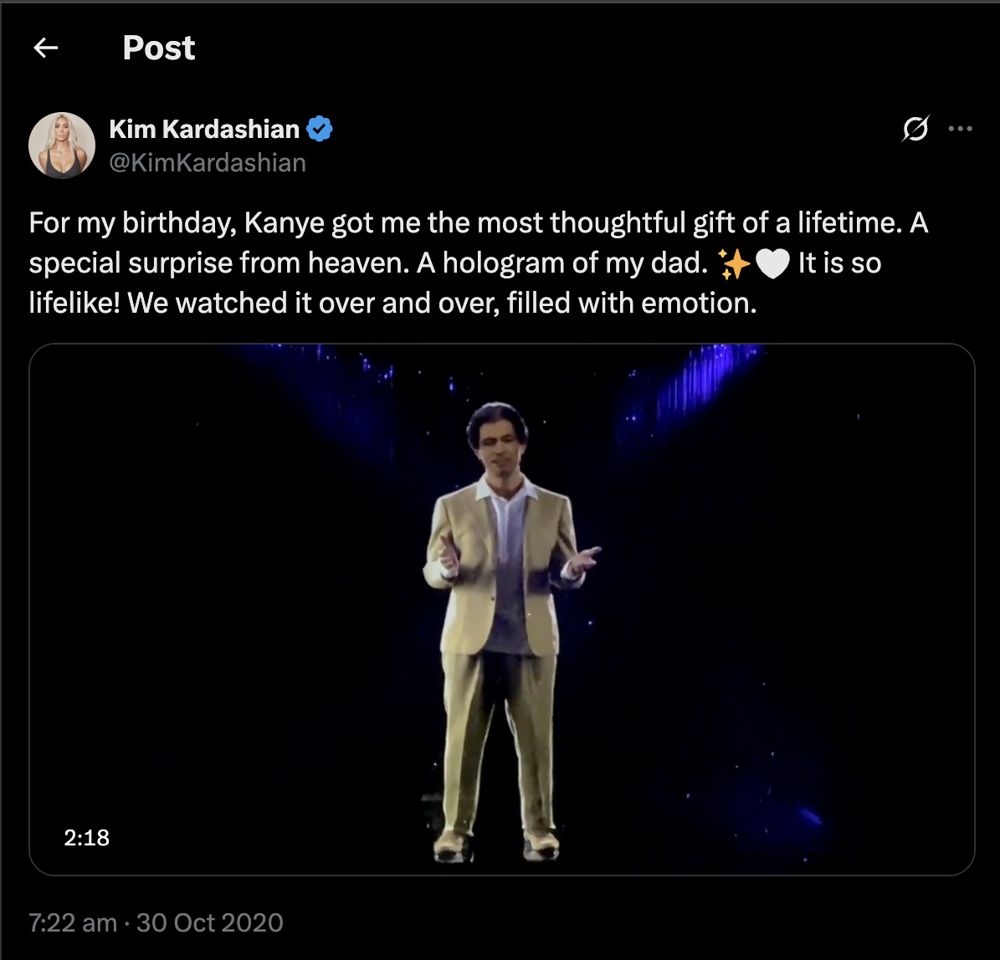

In July 2022, mourners at Marina Smith's funeral in Nottingham, UK, were surprised when she addressed them via an AI-powered holographic video. Before her passing, Smith recorded responses using StoryFile, a technology developed by her son, Dr. Stephen Smith, allowing attendees to engage in a virtual conversation with her.
In MBC's documentary "Meeting You," a grieving mother reunites with her late daughter through virtual reality. Wearing VR goggles, Jang Ji-sung tearfully meets a lifelike avatar of 7-year-old Na-Yeon. The emotional scene touched many in South Korea, showing how VR can offer new ways to process loss and memory.
For Kim Kardashian's 40th birthday, Kanye West gifted her a hologram of her late father, Robert Kardashian. The lifelike video delivered a heartfelt message, praised Kim's motherhood, and included Kanye's signature flair. Though reactions were mixed—some found it touching, others creepy—the gesture sparked global debate on grief, technology, and memory. You can view the original post here.
